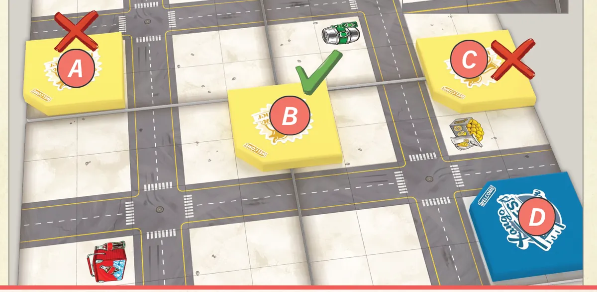

Setting Up
Player Count
| Players | Map Tiles | Starting Bank |
|---|---|---|
| 2 | 3 × 3 | $150 |
| 3 | 3 × 4 | $225 |
| 4 | 4 × 4 | $300 |
| 5 | 4 × 5 | $375 |
Map Setup
- Lay out random map tiles in the correct grid size, randomly oriented.
- Verify all 3 drink suppliers (soda, lemonade, beer) are on the map — swap tiles if needed.
- Place the house & garden tokens, campaign tokens, and food/drink tokens near the map.
- Fill the bank with $75 per player.
- Set up the employee supply tray.
Placing Your First Restaurant
In reverse turn order, each player places their first restaurant on the map (or passes):
- Must cover exactly 4 empty squares — no roads, no printed locations.
- The entrance corner (marked on the token) must be adjacent to at least 1 road.
- No two starting restaurant entrances can be on the same map tile.
